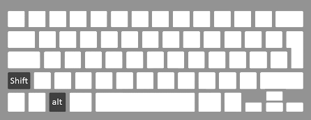

Горячие клавиши Windows

Работу в Windows можно сделать более эффективной и быстрой, если пользоваться не только мышью, но и применять «горячие клавиши» - специальные комбинации клавиш, призванные упростить и ускорить работу. Например, мало, кто знает, что очень часто используемый Проводник (куда уж без него) запускается одновременным нажатием Win + E. Согласитесь, это гораздо удобнее!
| Сочетание клавиш | Описание |
|---|---|
| Ctrl + Esc Win |
Открыть меню «Пуск» (Start) |
| Ctrl + Shift + Esc | Вызов «Диспетчера задач» |
| Win + E | Запуск «Проводника» (Explore) |
| Win + R | Отображение диалога «Запуск программы» (Run), аналог «Пуск» — «Выполнить» |
| Win + D | Свернуть все окна или вернуться в исходное состояние (переключатель) |
| Win + L | Блокировка рабочей станции |
| Win + F1 | Вызов справки Windows |
| Win + F | Открыть окно поиска файлов |
| Printscreen | Сделать скриншот всего экрана |
| Alt + Printscreen | Сделать скриншот текущего активного окна |
| Win + Tab Win + Shift + Tab |
Выполняет переключение между кнопками на панели задач |
| Ctrl + A | Выделить всё (объекты, текст) |
| Ctrl + C | Копировать в буфер обмена (объекты, текст) |
| Ctrl + V | Вставить из буфера обмена (объекты, текст) |
| Ctrl + X | Вырезать в буфер обмена (объекты, текст) |
| Ctrl + N | Создать новый документ, проект или подобное действие |
| Ctrl + S | Сохранить текущий документ, проект и т.п. |
| Ctrl + P | Печать |
| Ctrl + Z | Отменить последнее действие |
| Сочетание клавиш | Описание |
|---|---|
| Ctrl + A | Выделить всё |
| Ctrl + C | Копировать |
| Ctrl + X | Вырезать |
| Ctrl + V | Вставить |
| Ctrl + ← Ctrl + → |
Переход по словам в тексте. Работает не только в текстовых редакторах |
| Shift + ← Shift + → Shift + ↑ Shift + ↓ |
Выделение текста |
| Ctrl + Shift + ← Ctrl + Shift + → |
Выделение текста по словам |
| Home End Ctrl + Home Ctrl + End |
Перемещение в начало-конец строки текста |
| Ctrl + Home Ctrl + End |
Перемещение в начало-конец документа |
| Сочетание клавиш | Описание |
|---|---|
| Shift + F10 | Отображение контекстного меню текущего объекта (аналогично нажатию ПКМ) |
| Alt + Enter | Вызов «Свойств объекта» |
| F2 | Переименование объекта |
| Перетаскивание с Ctrl | Копирование объекта |
| Перетаскивание с Shift | Перемещение объекта |
| Перетаскивание с Ctrl + Shift | Создание ярлыка объекта |
| Щелчки с Ctrl | Выделение нескольких объектов в произвольном порядке |
| Щелчки с Shift | Выделение нескольких смежных объектов |
| Enter | То же, что и двойной щелчок по объекту |
| Delete | Удаление объекта |
| Shift + Delete | Безвозвратное удаление объекта, не помещая его в корзину |
| Сочетание клавиш | Описание |
|---|---|
| F3 или Ctrl + F | Отобразить или спрятать панель поиска в проводнике |
| F5 | Обновить окно проводника или браузер |
| Backspace | Перейти на уровень вверх в окне проводника или браузера |
| F4 | Перейти к адресной строке проводника или браузера |
| Сочетание клавиш | Описание |
|---|---|
| Alt + Tab Alt + Shift + Tab |
Вызов меню перехода между окнами и переход по нему |
| Alt + Esc Alt + Shift + Esc |
Переход между окнами (в том порядке, в котором они были запущены) |
| Alt + F6 | Переключение между несколькими окнами одной программы |
| Alt + F4 | Закрытие активного окна. На рабочем столе — завершение работы Windows |
| Alt F10 |
Вызов меню окна |
| Esc | Выйти из меню окна или закрыть открытый диалог |
| Alt + Space | Вызов системного меню окна |
| F1 | Вызов справки приложения |
| Ctrl + Up Ctrl + Down |
Вертикальная прокрутка текста или переход вверх-вниз по абзацам текст |
| Сочетание клавиш | Описание |
|---|---|
| Ctrl + Tab | Перемещение вперед по вкладкам |
| Ctrl + Shift + Tab | Перемещение назад по вкладкам |
| Tab | Перемещение вперед по опциям |
| Alt + подчеркнутая буква | Выполнение соответствующей команды или выбор соответствующей опции |
| Enter | Выполнение команды для текущей опции или кнопки |
| Клавиши со стрелками | Выбор кнопки, если активная опция входит в группу переключателей |
| Shift + Tab | Перемещение назад по опциям |
| Сочетание клавиш | Описание |
|---|---|
| F4 | Отображение списка поля «Адрес» |
| Ctrl + N | Запуск еще одного экземпляра обозревателя с аналогичным веб-адресом |
| Ctrl + R F5 |
Обновление текущей веб-страницы |
| Ctrl + E | Открывает панель «Поиск» |
| Ctrl + F | Запуск служебной программы поиска |
| Ctrl + O | Открывает диалоговое окно «Открыть» |
| Ctrl + P | Открывает диалоговое окно «Печать» |
| Ctrl + W | Закрытие текущего окна |
| F11 | Переход в полноэкранный режим и обратно |